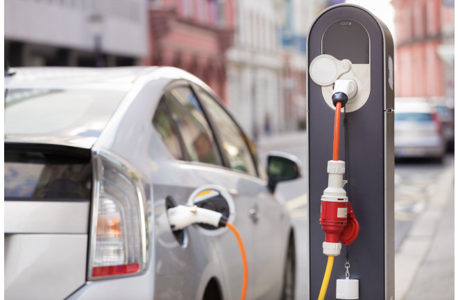

our recent posts
feb 2, 2021
How to Save Planet Earth
Climate journalist and author Tatiana Schlossberg says even a simple trip to the supermarket can feel paralyzing in 2021.
explore
Jan 3, 2021
Do One Thing Well
The modern approach to recycling that has been integrated across the U.S. for decades, despite persistent criticism and concerns about the broken model.
explore

May 8, 2021
Talk the Walk
Transportation makes up the biggest portion of human activities that are responsible for the increase in greenhouse gases in the atmosphere
explore